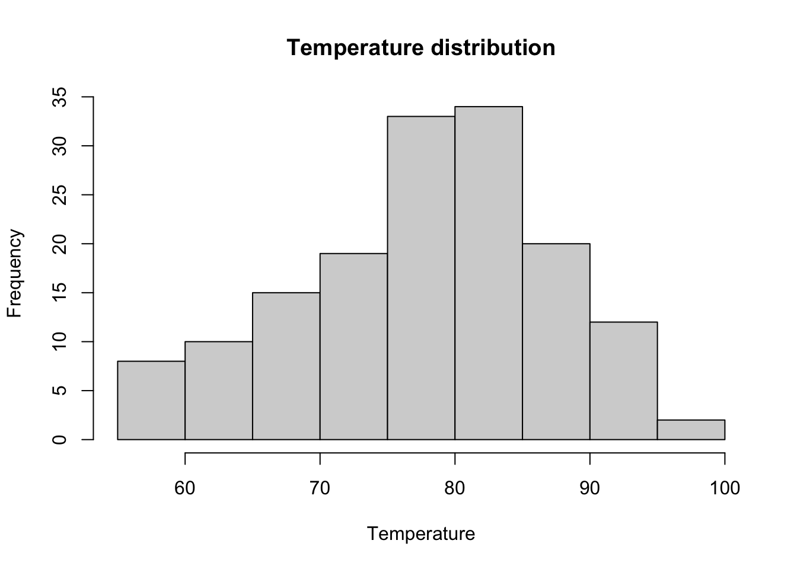
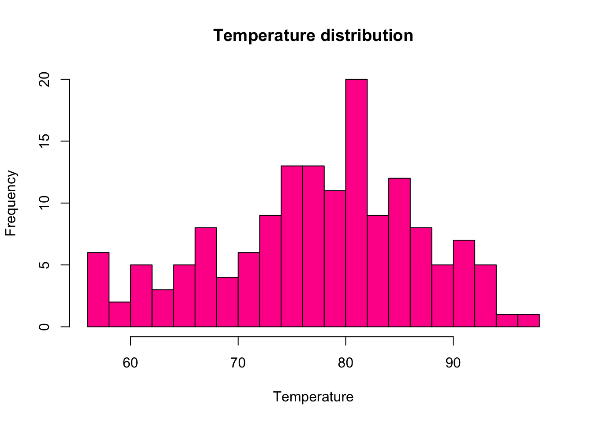
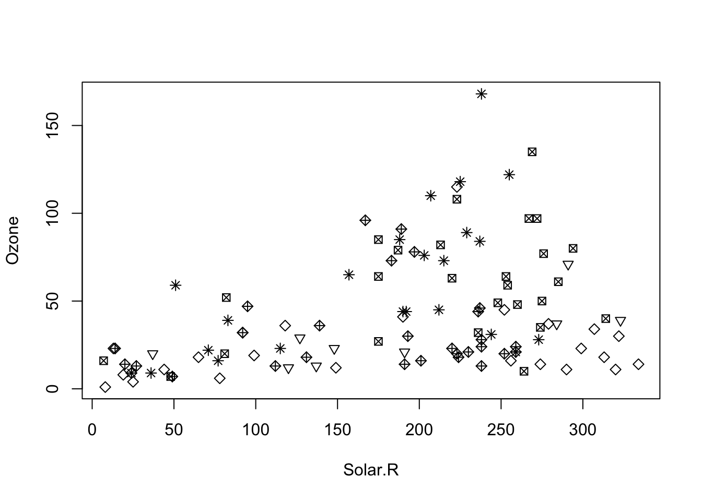
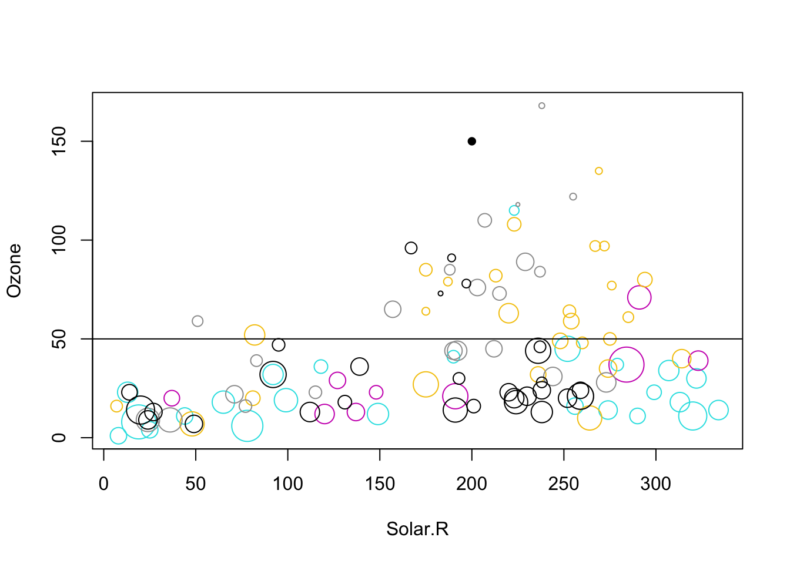
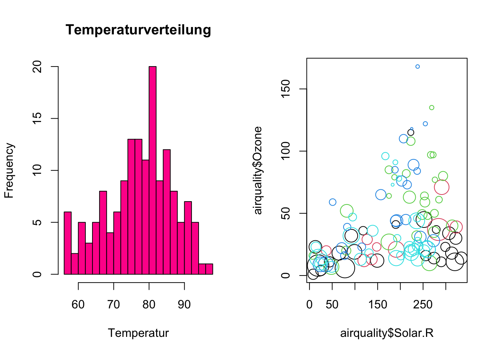

airquality[is.na(airquality$Ozone),] ## Ozone Solar.R Wind Temp Month Day## 5 NA NA 14.3 56 5 5## 10 NA 194 8.6 69 5 10## 25 NA 66 16.6 57 5 25## 26 NA 266 14.9 58 5 26## 27 NA NA 8.0 57 5 27## 32 NA 286 8.6 78 6 1## 33 NA 287 9.7 74 6 2## 34 NA 242 16.1 67 6 3## 35 NA 186 9.2 84 6 4## 36 NA 220 8.6 85 6 5## 37 NA 264 14.3 79 6 6## 39 NA 273 6.9 87 6 8## 42 NA 259 10.9 93 6 11## 43 NA 250 9.2 92 6 12## 45 NA 332 13.8 80 6 14## 46 NA 322 11.5 79 6 15## 52 NA 150 6.3 77 6 21## 53 NA 59 1.7 76 6 22## 54 NA 91 4.6 76 6 23## 55 NA 250 6.3 76 6 24## 56 NA 135 8.0 75 6 25## 57 NA 127 8.0 78 6 26## 58 NA 47 10.3 73 6 27## 59 NA 98 11.5 80 6 28## 60 NA 31 14.9 77 6 29## 61 NA 138 8.0 83 6 30## 65 NA 101 10.9 84 7 4## 72 NA 139 8.6 82 7 11## 75 NA 291 14.9 91 7 14## 83 NA 258 9.7 81 7 22## 84 NA 295 11.5 82 7 23## 102 NA 222 8.6 92 8 10## 103 NA 137 11.5 86 8 11## 107 NA 64 11.5 79 8 15## 115 NA 255 12.6 75 8 23## 119 NA 153 5.7 88 8 27## 150 NA 145 13.2 77 9 27# orsummary(airquality)## Ozone Solar.R Wind Temp ## Min. : 1.00 Min. : 7.0 Min. : 1.700 Min. :56.00 ## 1st Qu.: 18.00 1st Qu.:115.8 1st Qu.: 7.400 1st Qu.:72.00 ## Median : 31.50 Median :205.0 Median : 9.700 Median :79.00 ## Mean : 42.13 Mean :185.9 Mean : 9.958 Mean :77.88 ## 3rd Qu.: 63.25 3rd Qu.:258.8 3rd Qu.:11.500 3rd Qu.:85.00 ## Max. :168.00 Max. :334.0 Max. :20.700 Max. :97.00 ## NA's :37 NA's :7 ## Month Day ## Min. :5.000 Min. : 1.0 ## 1st Qu.:6.000 1st Qu.: 8.0 ## Median :7.000 Median :16.0 ## Mean :6.993 Mean :15.8 ## 3rd Qu.:8.000 3rd Qu.:23.0 ## Max. :9.000 Max. :31.0 ##
We can visualize variables with two plots, a histogram and boxplot:
hist(airquality$Temp)
boxplot(airquality$Temp)
In a box plot, the box ranges from 0.25 to 0.75 quantiles (the interquartile range, IQR), with the median as the thick line in the box. The whiskers (the other two vertical lines) are either the min/max values or the distance to 1.5*IQR (and points outside this range are considered outliers).
Categorical data
How often do different events occur?
table(mtcars$gear)## ## 3 4 5 ## 15 12 5
2.0.2 Visualizations for two variables
Scenario
Which plot
R command
Numeric
Histogram or boxplot
hist() andboxplot
Numeric with numeric
Scatterplot
plot
Numeric with categorical
Boxplot
boxplot(numeric~categorical)
Categorical with categorical
mosaicplot or grouped barplot
mosaicplot(table(categorical, categorical)) or barplot(data, beside=TRUE)
2.1 Classroom demo
# summary statistics by group, use dplyr ----------------------------------# install.packages("dplyr")library(dplyr) # uses tidyverse syntax## ## Attaching package: 'dplyr'## The following objects are masked from 'package:stats':## ## filter, lag## The following objects are masked from 'package:base':## ## intersect, setdiff, setequal, unionair_grouped <- airquality %>%# define dataset to be summarisedgroup_by(Month) %>%# define grouping factor (note that you don't need to tell which dataset to look in here (no $))summarise(meanwind =mean(Wind), meansolar =mean(Solar.R), maxOzone =max(Ozone), varTemp =var(Temp)) # define which summary statistics you want to be calculatedair_grouped## # A tibble: 5 × 5## Month meanwind meansolar maxOzone varTemp## <int> <dbl> <dbl> <int> <dbl>## 1 5 11.6 NA NA 47.0## 2 6 10.3 190. NA 43.5## 3 7 8.94 216. NA 18.6## 4 8 8.79 NA NA 43.4## 5 9 10.2 167. NA 69.8# What kind of object do you get?# a tibble (= the data.frame class for tidyverse) AND data.frameclass(air_grouped)## [1] "tbl_df" "tbl" "data.frame"air_grouped =as.data.frame(air_grouped) # make only a data.frame# plots for one numerical variable ----------------------------------------# plot: histogramhist(airquality$Temp)
# add axes labels and title... see help for other parametershist(airquality$Temp, main ="Temperature distribution",xlab ="Temperature")

# Save figures either via menu or script: (create folder "plots" first!)# script is preferred# pdf(file = "plots/histogram.pdf") # opens pdf file hist(airquality$Temp, breaks =20, col ="#FF0099",main ="Temperature distribution",xlab ="Temperature") # contents into pdf

# dev.off() # close pdf file# if pdf is opened in adobe or similar, you cannot write in it! (Windows)# same procedure for other file formats (jpg, png, eps...)# 1 categorial variable --------------------------------------------------str(mtcars)## 'data.frame': 32 obs. of 11 variables:## $ mpg : num 21 21 22.8 21.4 18.7 18.1 14.3 24.4 22.8 19.2 ...## $ cyl : num 6 6 4 6 8 6 8 4 4 6 ...## $ disp: num 160 160 108 258 360 ...## $ hp : num 110 110 93 110 175 105 245 62 95 123 ...## $ drat: num 3.9 3.9 3.85 3.08 3.15 2.76 3.21 3.69 3.92 3.92 ...## $ wt : num 2.62 2.88 2.32 3.21 3.44 ...## $ qsec: num 16.5 17 18.6 19.4 17 ...## $ vs : num 0 0 1 1 0 1 0 1 1 1 ...## $ am : num 1 1 1 0 0 0 0 0 0 0 ...## $ gear: num 4 4 4 3 3 3 3 4 4 4 ...## $ carb: num 4 4 1 1 2 1 4 2 2 4 ...counts =table(mtcars$cyl)# barplotplot(counts)
# different symbol for each monthplot(Ozone ~ Solar.R, data = airquality, pch = Month)

# color depends on the month, size on Windplot(Ozone ~ Solar.R, data = airquality, col = Month, cex = Wind/5)# low-level plotting functions # only add something to an existing plots: points() lines() etc.points(200, 150, pch =16)abline(h =50)

# combining two plotsoldPar =par(mfrow =c(1,2)) # c(number of rows, number of colums)# you can also specify various other plot characteristics, see ?parhist(airquality$Temp, breaks =20, col ="#FF0099",main ="Temperaturverteilung",xlab ="Temperatur")plot(airquality$Solar.R, airquality$Ozone, col = airquality$Month-4, cex = airquality$Wind/5)

# restore old par settingspar(oldPar)# Calculate correlations --------------------------------------------------cor(airquality$Solar.R, airquality$Ozone, use ="complete.obs") # pearson = default## [1] 0.3483417cor(airquality$Solar.R, airquality$Ozone, use ="complete.obs", method ="spearman")## [1] 0.3481865# pairs plot: correlates all variables to each otherplot(airquality)pairs(airquality) #the same
# you can change what is plotted in upper and lower panel:# copy function from helppanel.cor <-function(x, y, digits =2, prefix ="", cex.cor, ...){ usr <-par("usr"); on.exit(par(usr))par(usr =c(0, 1, 0, 1)) r <-abs(cor(x, y, use ="complete.obs")) ### complete.obs must be added manually txt <-format(c(r, 0.123456789), digits = digits)[1] txt <-paste0(prefix, txt)if(missing(cex.cor)) cex.cor <-0.8/strwidth(txt)text(0.5, 0.5, txt, cex = cex.cor * r)}pairs(airquality, lower.panel = panel.smooth, upper.panel = panel.cor)## Warning in par(usr): argument 1 does not name a graphical parameter## Warning in par(usr): argument 1 does not name a graphical parameter## Warning in par(usr): argument 1 does not name a graphical parameter## Warning in par(usr): argument 1 does not name a graphical parameter## Warning in par(usr): argument 1 does not name a graphical parameter## Warning in par(usr): argument 1 does not name a graphical parameter## Warning in par(usr): argument 1 does not name a graphical parameter## Warning in par(usr): argument 1 does not name a graphical parameter## Warning in par(usr): argument 1 does not name a graphical parameter## Warning in par(usr): argument 1 does not name a graphical parameter## Warning in par(usr): argument 1 does not name a graphical parameter## Warning in par(usr): argument 1 does not name a graphical parameter## Warning in par(usr): argument 1 does not name a graphical parameter## Warning in par(usr): argument 1 does not name a graphical parameter## Warning in par(usr): argument 1 does not name a graphical parameter
2.2 Exercises
In this exercise you will practice:
creating and plotting contingency tables for categorial variables (mosaicplot)
plotting a numerical variable (histogram)
plotting two numerical variables against each other (scatterplot)
calculating correlations
To perform this exercise use the help of the according functions. Also have a look at the examples at the bottom of the help page. You can obtain help for a specific function in several ways:
select the function in your script (e.g. double click it or simply place the cursor in the word) and press F1
“?” + function name (e.g. ?hist) and execute
go to the “help” panel (below the environment) and search for the function
Let’s get started!
2.2.1 Contingency tables
Here, we will have a look at the data set “Arthritis” from the “vcd” package. The study was conducted as a double-blind clinical trial investigating a new treatment against arthritis. The improvement was measured as a categorial variable with the possible outcomes “improved”, “some” or “none”.
Install and then load the package “vcd” and have a look at the data using the View() function. This will open a new tab next to your R script. To return to your script, close the new tab or click on your script.
library(vcd)View(Arthritis)
An important function for categorial data is table(). It produces a contingency table counting the occurences of the different categories of one variable or of each combination of the categories of two (or more) variables.
We are curious how many patients actually improved in the study and how this is influenced by the treatment. To show this graphically, we produced two plots (see below) using the following functions:
table()
plot() and barplot()
(str())
(summary())
Your task is now to reconstruct the two plots shown below by using these functions.
Hints for plot 1
What kind of plot is shown here? How many variables are shown in the plot? Approach: First, create a new object consisting of the table of the variable of interest (check “demonstration.R”, if you have problems with the table function). Then use this object for plotting. Changing plot elements: Have a look at the help of the plotting-function to find out how to change the y- and x-axis labels. What do you notice on the y-axis? You can change the limits of the y-axis using “ylim = c(from, to)” as an argument in the plotting function.
Hints for plot 2
What kind of plot can you see here? How many variables does it show? To plot this you need to create a contingency table with the variables of interest (check “demonstration.R”, if you have problems doing this). Changing plot elements: You can name the variables in your contingency table (e.g. name = variable, othername = othervariable). The name you assign to your table will be used as the title in the plot.
What do you think of the study now? Could you already draw conclusions from this plot? Provide your answer to the last question on elearning-extern.
Solution
Plot 1
library(vcd)Improvedcounts <-table(Arthritis$Improved) # create a table which counts the occurences of the three categories in the "Improved" variable, the table is assigne to the name "Improvedcounts"barplot(Improvedcounts, # create a barplot of the table "Improvedcountsylim =c(0,50), # change the limits of your y axis: starting from zero to 50xlab ="Improved", # add the label "Improved" to your x axisylab ="Frequency") # add the label "Frequency" to your y axis
Plot 2
Ratios <-table(Improved = Arthritis$Improved, Treatment = Arthritis$Treatment) # create a table with the assigned name "ratios", give the name "Improved" to the first variable which is the variable Improved from the data set Arthritis, give the name "Treatment" to the second variable which is the variable Treatment from the data set Arthritisplot(Ratios) # create a plot of the table "ratios"
To view the tables with the names “Improvedcounts” and “ratios” you can simply execute their names:
Could you already draw conclusions from this plot?
No, because this is only a descriptive plot. You can say that a large proportion of the patients that got a placebo treatment did not improve while a large proportion of the patients that got the new treatment improved markedly. However, this could also be the result of random variation and sampling. We need inferential statistics to make conclusions about the effectiveness of the treatment.
2.2.2 Histogram
Now let’s have a look at the “birdabundance” dataset, which is in the “EcoData” package. This is not stored at CRAN (the official platform for R packages, but at github where we host our own code collections). If you haven’t done this yet, use the code below to install the package (note that you also need the “devtools” package to do this. Again, to load it and make the data set accessible, execute the function library(EcoData). To view the data set you can use the View() function again.
You can also get more explanations on the data set via the help.
The dataset has been assessed by scientists in Australia who counted birds in forest fragments and looked for drivers that influence these bird abundances, e.g. the size of a forest fragment and the distance to the next fragment. We want to see how these distances vary. A histogram is the standard figure to depict one numerical variable, such as for example distance measurements.
Your task is now to reconstruct the following histogram including the labels, colors and lines using the functions:
hist() to create a histogram
abline() to add (vertical) lines to your histogram
Think about what the histogram tells you about the distances between each forest fragement and the next forest fragment. What do the red and purple lines represent? Give your answer on elearning-extern.
Hints for plotting
Change the color (look at the help to see how). You can also try other colors, e.g. your favorite color (you can find all available colors with the function colors()). Change the bar widths (breaks). Play around to see how they change. When changing the bar widths, what do you notice on the y-axis? You can change the y-axis limits using “ylim” (see examples for hist(), second last line). Change the title and the x-axis name of your histogram using the arguments “main” and “xlab”.
To add the lines, try the abline() function with the argument “v = 90” and look what happens. To remove the line, you have to execute the code producing your histogram again. Remember that abline() is a low level plotting function, which means it only adds an element to an existing plot! Instead of calculating the depicted values with a function and then pasting the values into your abline function, you can also directly use the function in abline().
See an example here:
hist(airquality$Temp)abline(v =90, col ="blue")abline(v =median(airquality$Temp), col ="red")
Solution
You can either create a scatterplot of two numerical variables like this:
#Create a function to generate a continuous color palette from red to bluerbPal <-colorRampPalette(c('red','blue')) # rpPal for red to blue paletteplot(birdabundance$DIST, birdabundance$ABUND, # create a plot of the variables DIST against ABUND from the data set birdabundanceylab ="Distance (m)", # add the label "Distance" to the y axisxlab ="Bird abundance", # add the label "Bird abundance" to the x axiscol =rbPal(5)[birdabundance$GRAZE], # color the data points according to their category in the variable GRAZE from the data set birdabundancepch =17) # change the point shape
Or like this:
plot(ABUND ~ DIST, data = birdabundance, # create a plot of the variables DIST against ABUND from the data set birdabundancexlab ="Distance (m)", # add the label "Distance" to the x axisylab ="Bird abundance", # add the label "Bird abundance" to the y axiscol =rbPal(5)[GRAZE], # color the data points according to their category in the variable GRAZE as a gradientpch =17) # change the point shape
The advantage of the second version is that it uses the structure of “response variable (y) explained by (~) explanatory variable (x)”. Also, you tell the plot function which data set to use once and it will automatically draw the variables from there, while in the first version you name the data set and the respective variable each time (even for the color).
What do you notice about the distribution of the colors along bird abundance?
You can see that the blue data points are only at the low abundances, whereas the red data points are rather at the higher abundances. Purple data points are throughout all abundances. There thus seems to be a correlation between the grazing classes and bird abundances.
2.2.3 Scatterplot
As you’ve learned by now, plot() can create different types of plots depending on the type of the input data. It creates a scatterplot when plotting two numerical variables. Now we are interested to see how the abundance of birds is affected by the distance to the next forest fragment, and if there is another variable that is important for this relationship (visualized here by the color of the points).
Again, your task is to reconstruct the following plot using the following functions:
plot()
(str())
(summary())
What do you notice about the distribution of the colors along bird abundance?
Hints for plotting:
What is plotted on the x-axis, what on the y-axis?
There are two different ways to write the plot function. One is to stick with the “Usage” in the help of the plot function (giving coordinates along the x-axis as the first attribute and those along the y-axis as the second attribute). The other way is to write the relationship between x and y as a formula that is: “y~x, data = dataset” Use google to find out how you can change the point shapes in your plot.
Look at the dataset to find out which variable is indicated by the color of the points in the plot. Hint: It is a variable indicating 5 intensity levels. To change the color, include the attribute “color”” in your plot function and set it equal to the variable.
To get a color gradient you can create a function with the following code. Apply it before producing your plot and use the created function rbPal() as the color in the plot.
# Palettes can be created with a function for the grDevices packageinstall.packages("grDevices")library(grDevices)# Create a function to generate a continuous color palette from red to bluerbPal <-colorRampPalette(c('red','blue'))# Example for color in a plotplot(Ozone ~ Solar.R, data = airquality, col =rbPal(12)[Month]) # you can use any number, here it's 12 because we have 12 months
Solution
You can either create a scatterplot of two numerical variables like this:
#Create a function to generate a continuous color palette from red to bluerbPal <-colorRampPalette(c('red','blue')) # rpPal for red to blue paletteplot(birdabundance$DIST, birdabundance$ABUND, # create a plot of the variables DIST against ABUND from the data set birdabundanceylab ="Distance (m)", # add the label "Distance" to the y axisxlab ="Bird abundance", # add the label "Bird abundance" to the x axiscol =rbPal(5)[birdabundance$GRAZE], # color the data points according to their category in the variable GRAZE from the data set birdabundancepch =17) # change the point shape
Or like this:
plot(ABUND ~ DIST, data = birdabundance, # create a plot of the variables DIST against ABUND from the data set birdabundancexlab ="Distance (m)", # add the label "Distance" to the x axisylab ="Bird abundance", # add the label "Bird abundance" to the y axiscol =rbPal(5)[GRAZE], # color the data points according to their category in the variable GRAZE as a gradientpch =17) # change the point shape
The advantage of the second version is that it uses the structure of “response variable (y) explained by (~) explanatory variable (x)”. Also, you tell the plot function which data set to use once and it will automatically draw the variables from there, while in the first version you name the data set and the respective variable each time (even for the color).
What do you notice about the distribution of the colors along bird abundance?
You can see that the blue data points are only at the low abundances, whereas the red data points are rather at the higher abundances. Purple data points are throughout all abundances. There thus seems to be a correlation between the grazing classes and bird abundances.
2.2.4 Correlation
In the previous plot on bird abundance you’ve seen three variables. Now we want to know, how they are correlated with each other. Remember that we can use the function cor() to calculate correlations. Which of the following correlation coefficients (Pearson) belongs to which variable pair? Can you see these correlations in your previous plot?
Give your answer to the second last question on elearning-extern. Think about the meaning of the correlation values (positive/negative, strength). Is it what you would have expected by looking at the plot?
The first correlation (abundance to distance) tells us that there is a small positive correlation between the two variables, but it does not tell us whether it is significant or not. We will properly test such relationships later in the course. In the scatter plot we have seen this weak positive correlation already. The second correlation (abundance to grazing) tells us that there is a stronger negative correlation between abundance and grazing. We have already seen a pattern of the color of the data points along bird abundances (red towards higher, blue towards lower abundances). The third correlation (grazing to distance) tells us that there is a small negative correlation between the two variables. However, the color pattern along distance is not as obvious as for abundance.